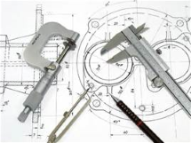

Critical Web Development Issues
Here is a discussion of 5 critical web development issues that web programmers should be aware of. The issues are ease of use, building a web page that works with all browsers, considering disabled users, getting your website found, and ensuring the website looks good on all screen sizes.
Qualities of a Well-Designed Website
This page offers a summary of what is needed for well-designed websites. Such qualities include ease of use, web design that works on any screen, a good home page, and ways for users to track their progress through the site.